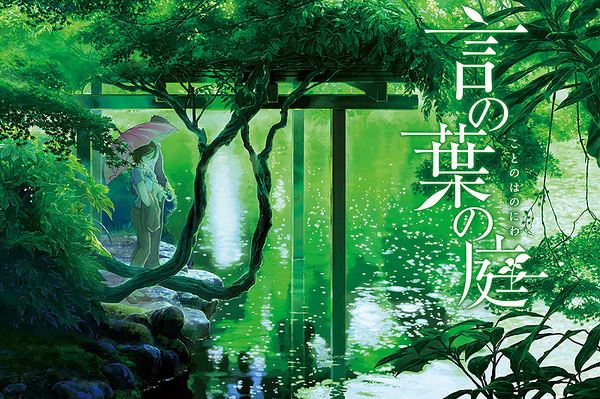

【灰鸦影评40期】 新海诚：非说对我影响最大的，首先想到宫崎骏
很多人都喜欢把新海诚称作是下一任的宫崎骏。因为纵观现在的日本动画电影界，除了他，确实很难找出能在动画电影方面独树一帜的人物。不过新海诚并不喜欢这种称呼，在这次的中国之行中，他就不止一次说过“我不是下一任的宫崎骏”。
他认为，宫崎骏的作品适合男女老少去看，而自己作品的受众更倾向于青少年。新海诚显然很清楚自己的短板和局限性：“我自己擅长的领域还是关于青春、关于爱情。”虽然他很爱宫崎骏的电影，但他明白自己还掌控不了有如宫崎骏一般，既有天马行空的想象力，又同时具有现实意义的作品。
他也曾经去尝试过拍有架空设定的《追逐繁星的孩子》，但是结果却很两极，这也让他更笃定地去发展自己擅长的主题，将自己所感知到和观察到的日常发挥至极致，勤勤恳恳地去描述少男少女之间的邂逅和爱情。这才形成了如今人人称道的“每一帧都是壁纸”的说法。
网易娱乐：什么让你对云如此的敏感，所有人看过你的作品，都会对里面出现的天空和云彩很难忘。新海诚：小时候第一次自己花钱去电影院看电影，看的是宫崎骏的《天空之城》，当时就觉得“哇，这个云好厉害！”之后回到日常生活中，我也开始去观察天空中的云，发现现实生活中的云也是非常美的。

目前新海诚最新作《你的名字。》电影票房已经突破180亿日元（约合人民币11.7亿元），在日本国产电影史上，该电影目前暂时排名第四，仅次于宫崎骏的《幽灵公主》《哈尔的移动城堡》《千与千寻》。作为除宫崎骏外，第一个取得票房破百亿的成绩的导演，新海诚常常被媒体用来和宫崎骏比较，甚至连日本国外的媒体都常常拿他和宫崎骏进行比较。
近日出席颁奖典礼的新海诚也对此进行了回应，他谦虚地表示：“无论到哪个国家都有人拿我们来比较，我昨天一边看着（电视台重播的宫崎骏导演的）《红猪》一边想‘把我们相提并论是对我的夸大。’”此外，新海诚还表示：“宫崎导演是非常高大上的模范，就算和他走一样的方向，我也追不上他。
上一篇
下一篇